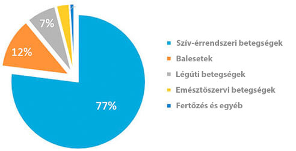
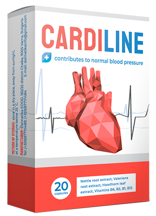

Statisztika: Minden 3-ik 35 évesnél idősebb polgár meghal a magas vérnyomás okozta betegségek miatt!
Király Kinga:«Én személyesen elküldöm az első olvasóknak a magas vérnyomás kezelésére szolgáló gyógyszert 50%-os kedvezményel»
A híres szívsebész, az orvostudomány szervezője, professzor
A szív- és érrendszeri megbetegedések - a világvezető betegségek az általuk elvett életek száma alapján. Szívrohamok és a stroke-ok 94% -a éppen a megnövekedett vérnyomás miatt fordul elő. A magas vérnyomása esetek 89% -ában a szívroham és a stroke halálos kimenetelben végződik. A konkrét értékekről szólva a hipertónia a végzetes "természetes" kimenetek mintegy 77-78% -áért felelős. Abszolút értelemben - ez körülbelül 1,54 millió haláleset 2016-ban.
“A halálozás okai 2016 évben.”
A legszörnyűbb dolog az, hogy a legtöbb ember még azt sem sejteti, hogy magas vérnyomásuk van. A statisztikák szerint a hypertoniás betegek 67% -a nem tudja, hogy beteg. Az a tény, hogy a nyomásugrást nem veszik komolyan, amíg hipertóniás válságra nem kerül sor, amikor a nyomás egyszerűen túl van. Kevés ember figyel a fejfájásra, a szédülésre, a gyengeségre, az arc duzzanatára, a palpitációra, a homályos látásra és az idegességre. Időközben ezek a tünetek már a krónikus magas vérnyomásról beszélnek. És itt az ideje, hogy sürgősen tegyenek lépéseket, még mielőtt túl késő lenne!
Napjainkig csak egy orvosság van a magas vérnyomásban, amely befolyásolja a betegség okait, és ha megfigyelhető, teljes mértékben megszünteti a magas vérnyomást. Ez a német termék«». Az a tény, hogy az gyógyszer teljesen visszaállítja az érrendszeri tónust az egyedi tudományos képlet miatt. Továbbá a gyógyszer csökkenti a koleszterinszintet és normalizálja a szívfrekvenciát. Nagyon fontos, hogy a "" nemcsak hatékony, hanem biztonságos az egészség számára is, mert kizárólag természetes összetevőkből áll. Ezért a «» bármilyen korban használhatja, anélkül, hogy félne a mellékhatásoktól és más szervek szövődményeitől. A gyógyszer hatékonyságát és biztonságosságát számos klinikai vizsgálat igazolta, amelyekben több mint 5000 ember vett részt.
Korábban a nem minden országban szolgált, annak ellenére, hogy személyesen hosszú tárgyalásokat folytattam a gyártókkal. De most végre, a «» megvásárolható hazánkban.

Jó napot, Miss Chen. Kérlek, mondja el miért hozták ezt a döntést?
Fő feladatunk a lakosság egészségének megőrzése az egész világon. És ha van valahol egy probléma, meg kell oldanunk. A lakosok több mint 70% -a szenved magas vérnyomásban, és csaknem minden harmadik hal meg a szív- és érrendszeri megbetegedésben. Ez az adat sokszor magasabb, mint az európai szint.
- Szörnyű számok! Kérem, mondja meg, hogyan küzd az Európai Unió a magas vérnyomással?
- Jelenleg a német tudósok által kifejlesztett «» innovatív eszköz érkezik minden európai klinikára és rehabilitációs központba. A "" sajátossága, hogy nincs ellenjavallat és gyógyítja a véredényeket a sejtek szintjén. Ez lehetővé teszi, hogy gyorsan normalizálják a nyomást és megelőzzék a szív-és érrendszeri betegségek kialakulását.

- Chen asszony, igaz, hogy ez az eszköz már elérhető nálunk?
- Mondja el nekünk, hogy a " "hogyan hat a szervezetre?
- Az Egészségügyi Világszervezet kutatási eredményei alapján a «» gyógyszer a következő hatásokkal jár:
- • tónusba hozza a vérereket;
- • csökkenti a koleszterin;
- • normalizálja a szív ritmusát;
Jelenleg a következő statisztikák állnak rendelkezésre:
- - a szív-és érrendszeri betegségek megelőzésében a 35 évnél idősebb személyeknél a "" segítségével a vérnyomás normalizálódása a válaszadók 97% -a,
- - a kinevezése a hypertoniás válság utáni helyreállítási időszakban, az agyi véráramlás javulását az emberek 86% -ában észlelték.
- Chen asszony, nagyon köszönöm az interjút! Ez valóban remek hír minden lakos számára. Reméljük, hogy most meg tudunk birkózni a magas vérnyomással és növeljük az magzarok átlagos várható élettartamát.
Hozzászólások